UDN
Search public documentation:
AppleiOSProvisioningSetupJP
English Translation
中国翻译
한국어
Interested in the Unreal Engine?
Visit the Unreal Technology site.
Looking for jobs and company info?
Check out the Epic games site.
Questions about support via UDN?
Contact the UDN Staff
中国翻译
한국어
Interested in the Unreal Engine?
Visit the Unreal Technology site.
Looking for jobs and company info?
Check out the Epic games site.
Questions about support via UDN?
Contact the UDN Staff
モバイル用ホーム > iOS プロビジョニング概要 > iOS プロビジョニングのセットアップ
iOS プロビジョニングのセットアップ
概要
 このツールの機能は次のとおりです。すなわち、アプリケーションをパッケージ化する機能、ならびに、Apple の開発用証明書を使用してアプリケーションへ署名する機能、パケージを iOS デバイスにデプロイする機能が含まれています。署名のプロセスには、 公開鍵暗号 ならびに公開鍵と秘密鍵の両方が必要となります。
このツールの機能は次のとおりです。すなわち、アプリケーションをパッケージ化する機能、ならびに、Apple の開発用証明書を使用してアプリケーションへ署名する機能、パケージを iOS デバイスにデプロイする機能が含まれています。署名のプロセスには、 公開鍵暗号 ならびに公開鍵と秘密鍵の両方が必要となります。
プロビジョニングのセットアップ
- 今回始めて iOS ハードウェアの開発をする場合は、 新たなプロビジョニングを作成する のセクションから始めてください。
- 以前にiOS ハードウェアの開発をするためにセットアップ済みである場合は、 既存のプロビジョニングを移行する のセクションに進んでください。
新たなプロビジョニングを作成する
- 証明書依頼と鍵ペアを作成する。
- 証明書とモバイル プロビジョンを作成する。
- プロビジョンと証明書を UDK にインポートする。
証明書依頼と鍵ペアを作成する
このプロセスではまず、コンフィギュレーション ウィザードの [ New Users ] (新規ユーザー) タブから証明書依頼と鍵ペアを作成します。この 2 つはディスクに保存され、後ほどこのプロセスで使用されることになります。
-
ボタンをクリックして、 [ Generate Certificate Request ] (証明書依頼を作成する) ウィンドウを開きます。

-
次の事項に関して、入力欄を記入します。
- Email Address (電子メールアドレス) - この電子メールアドレスは開発者アカウント (Apple ID など) に関連づけられます。
- Common Name (代表する名前) - 証明書で使用する名前です。(例: ご自分の姓名、会社名など)。

-
ボタンをクリックして、鍵ペアのファイルを作成します。
ファイル ダイアログボックスが開き、鍵ペア ファイルをディスクに保存することができます。このファイルを既知のフォルダに保存します。コンピュータ上のどこにでも保存することはできますが、他の UDK ファイルと一緒に保存するのがよいでしょう。以下はその例です。
C:\UDK\Developer Files
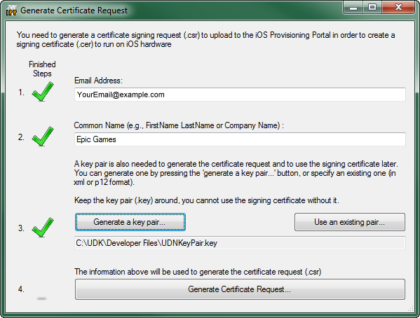
-
 ボタンをクリックして、証明書依頼ファイルを作成します。
ファイル ダイアログボックスが開くので、証明書依頼ファイルをディスクに保存することができます。鍵ペア ファイルが保存されたディレクトリと同じディレクトリに保存します。
ボタンをクリックして、証明書依頼ファイルを作成します。
ファイル ダイアログボックスが開くので、証明書依頼ファイルをディスクに保存することができます。鍵ペア ファイルが保存されたディレクトリと同じディレクトリに保存します。
証明書とプロビジョンを作成する
開発用証明書とモバイル プロビジョンを作成するプロセスでは、 Apple Developer サイト を参照する必要があります。このセクションでは、プロビジョニング アシスタントを使用してプロビジョニング プロファイルをセットアップするプロセスについて詳解します。なお、このプロセスは iOS Provisioning Portal (iOS プロビジョニング ポータル) から手動で実行することもできます。手動でプロビジョニングをセットアップする方法については、 高度なプロビジョニングのセットアップ のセクションをご参照ください。-
リンクをクリックして iOS Dev Center のトップページを開きます。ここが、すべての iOS 開発のメインのページとなります。
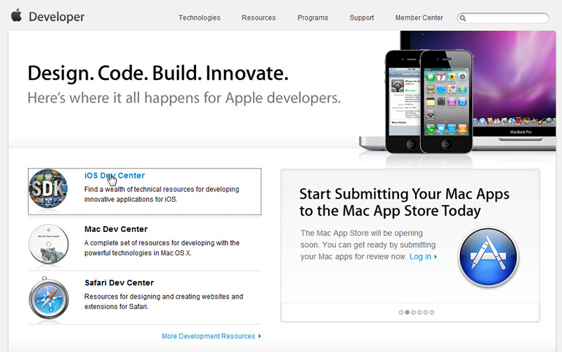
-
[ Login ] (ログイン) ボタンをクリックして、ご自分の開発者アカウントにログインします。
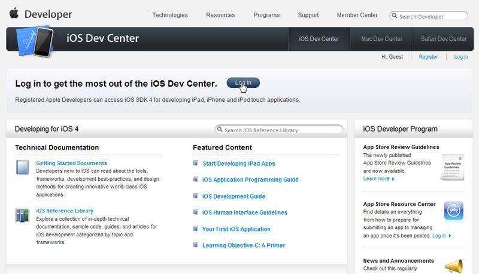
次のページで開発者ログイン認証情報を入力して Sign In (サインイン) します。これによって、 iOS Dev Center のトップページに戻ります。 -
右サイドバー上にあるリンクをクリックして、 iOS Provisioning Portal (iOS プロビジョニング ポータル) を開きます。
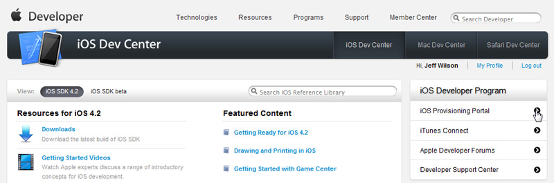
-
現段階で、 iOS Provisioning Portal (iOS プロビジョニング ポータル) のトップページが表示されているはずです。
 Launch Assistant (アシスタント を起動する) をクリックして Development Provisioning Assistant (開発プロビジョニング アシスタント) を起動します。
Launch Assistant (アシスタント を起動する) をクリックして Development Provisioning Assistant (開発プロビジョニング アシスタント) を起動します。

-
Development Provisioning Assistant (開発プロビジョニング アシスタント) が開くはずです。 Continue (続ける) をクリックして、プロビジョニングのプロセスを開始します。
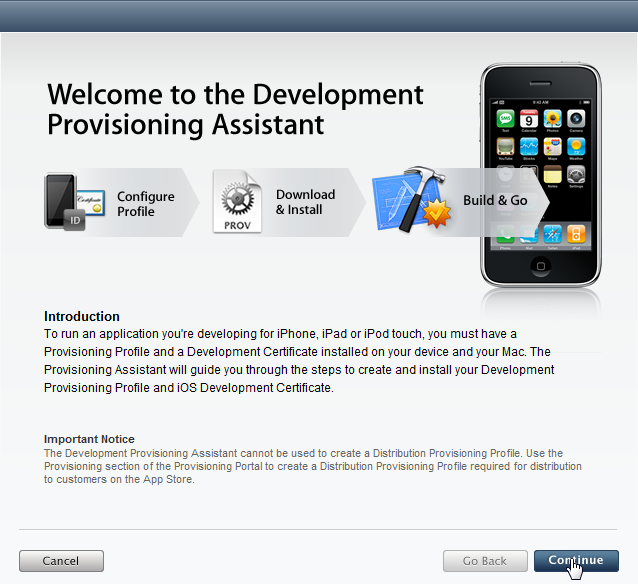
-
ここで、新たな App ID を作成する必要があります。これは一意の識別子です。この識別子によって、iOS アプリケーションが Apple Push Notification Service (Apple プッシュ型通知サービス) や外部のハードウェア アクセサリと通信することが可能になります。ここで、 App ID のために表示名をつけます。これは、iOS Provisioning Portal (iOS プロビジョニング ポータル) サイト上のさまざまな部分で使用されることになる判読可能な名前です。
注意: デフォルトの場合、アシスタントによって作成される App ID では、Bundle Identifier (バンドル個体識別情報) にワイルドカードが使用されます。これによって、Game Center や In App Purchase、Apple Push Notification Service といった機能においてプロビジョンが使用できなくなります。これらの機能で使用可能な App ID を作成する方法と、App ID をプロビジョン プロファイルに割り当てる方法については、 高度なプロビジョニングのセットアップ をご参照ください。
新たな App ID Description (App ID の説明) をテキスト入力欄に入れます。

-
次に、開発デバイスをプロビジョンに割り当てます。当然のことながら、iOS デバイス (iPad、iPhone、iPod、iPod Touch) が必要になります。複数のデバイスを追加する場合は、 高度なプロビジョニングのセットアップ のセクションをご参照ください。
入力欄に次の情報を入力します。
- Device Description (デバイスの説明) - 特定のデバイスを識別するために利用されることになる表示名です。使用すべきデバイスが複数ある場合は、後ほど iOS Provisioning Portal (iOS プロビジョニング ポータル) から複数のデバイスを追加することができます。詳細については、 デバイスの追加 をご参照ください。
- Device ID - ご自分の iOS デバイスのためのユニークな (一意の) ID です。Mac 上の Xcode から ID を特定するという方法もありますが、他にも、App Store 内で入手できる iDevice Info というアプリケーションを利用してデバイスの ID を調べることができます。このアプリケーションは、ID をメールで送信することによって、入力フィールドへのコピー & ペーストを簡単に行えるようにもなっています。

-
Generate Certificate Signing Request (証明書署名依頼) のページが表示されているはずです。コンフィギュレーション ウィザードを使用して既に証明書依頼を作成しているので、[ Continue ] (続ける) をクリックしてこのページをスキップします。
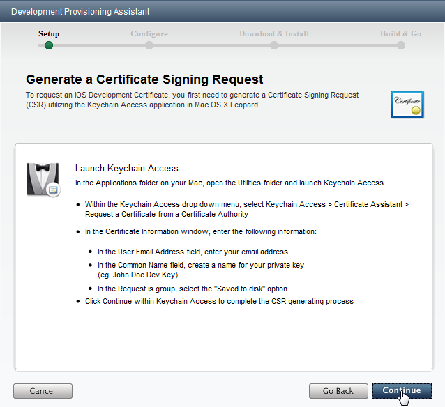
次に、開発用証明書依頼を提出します。コンフィギュレーション ウィザードを使用して作成した証明書依頼 (.csr ファイル) まで進んでそれを選択します。
-
プロビジョニング プロファイルのための説明を入力して、[ Continue ] (続ける) をクリックします。これは特定のプロビジョンを識別するために利用されることになる表示名です。

-
このプロビジョニング プロファイルは、次のページがロードされる時に作成されます。大きな緑のチェックマークが表示されたら、プロビジョンが作成されましたので、[ Continue ] (続ける) をクリックします。

-
新たに作成されたプロビジョニング プロファイルをダウンロードして、UDK にインポートできるようにする必要があります。 [ Download ] (ダウンロード) をクリックしてファイルを保存する場所を選択します。(鍵ペアと証明書署名が保存されている場所がよいでしょう)。
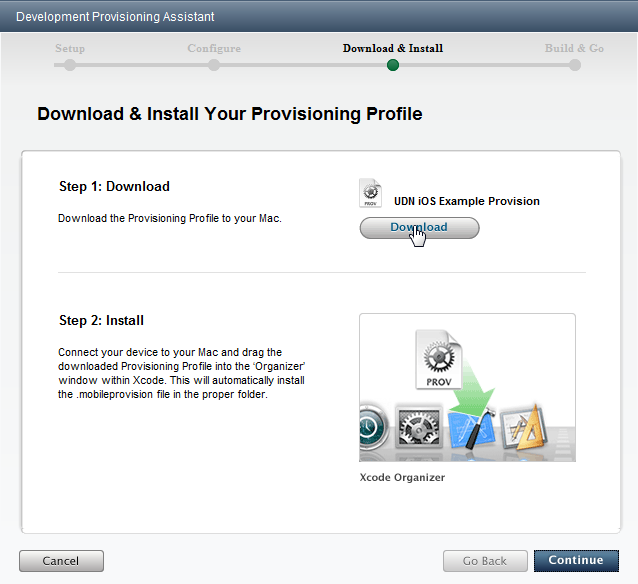
ファイルがダウンロードされたら、[ Continue ] (続ける) をクリックして次に進みます。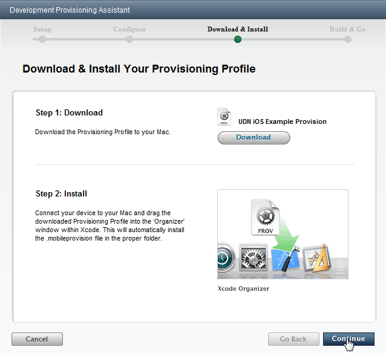
Mac 上の Xcode にプロビジョンをインストールする必要がない限り、次のページの [ Continue ] (続ける) をクリックしてこれをスキップします。UDK の開発には必要がありませんが、将来、App Store にゲームを提出することになった場合には必要になります。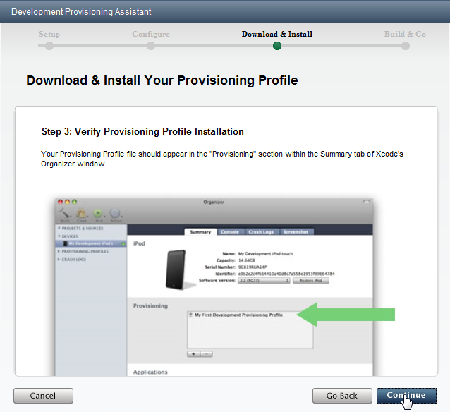
-
作成された開発用証明書は、UDK にもインポートする必要があるためダウンロードしなければなりません。[ Download ] (ダウンロード) をクリックして、他のファイルとともに証明書を保存します。
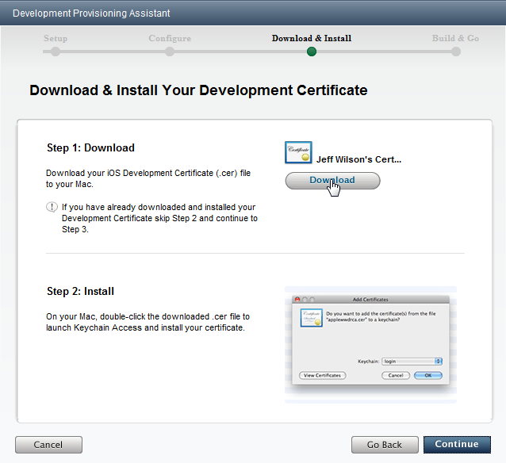
ファイルがダウンロードされたら、[ Continue ] (続ける) をクリックして次に進みます。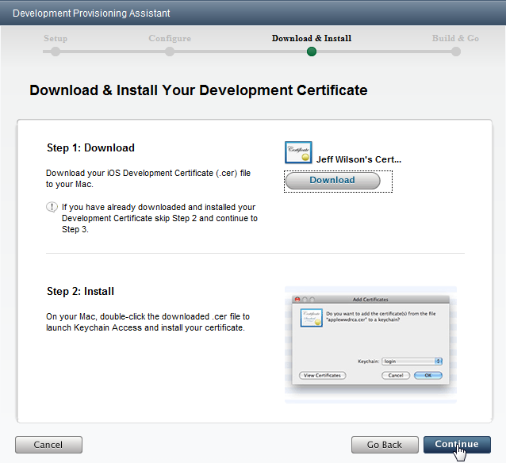
Mac 上のキーチェーン (Keychain) に証明書をインストールする必要がない限り、次のページの [ Continue ] (続ける) をクリックしてスキップします。UDK の開発には必要がありませんが、将来、App Store にゲームを提出することになった場合には必要になります。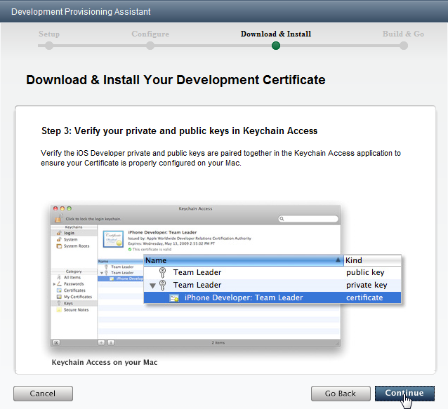
-
[ Continue ] (続ける) をクリックして次のページをスキップします。UDK を使用した iOS アプリケーションの開発には当てはまりません。
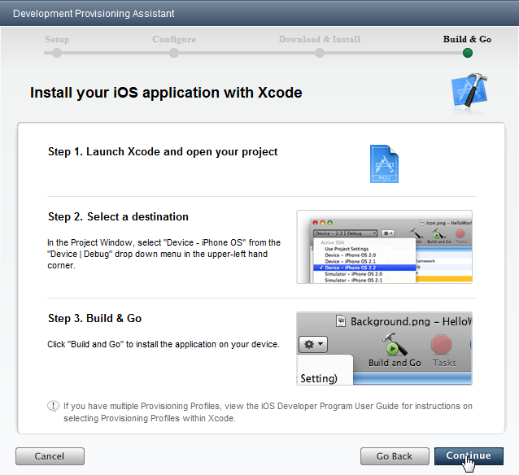
これで、開発用証明書とプロビジョニング プロファイルの作成プロセスが完了しました。次のページの [ Done ] (完了) をクリックしてアシスタントを終了します。
新たなプロビジョンと証明書をインポートする
開発用証明書とプロビジョニング プロファイルを作成およびダウンロードし終わったら、コンフィギュレーション ウィザードを使って UDK にインポートします。-
ボタンをクリックして、プロビジョニング プロファイルをインポートします。ファイル ダイアログボックスを使用して、先にダウンロードしたプロビジョニング プロファイルを見つけます。プロファイルのインポートが成功すると、緑のチェックマークが表示されます。
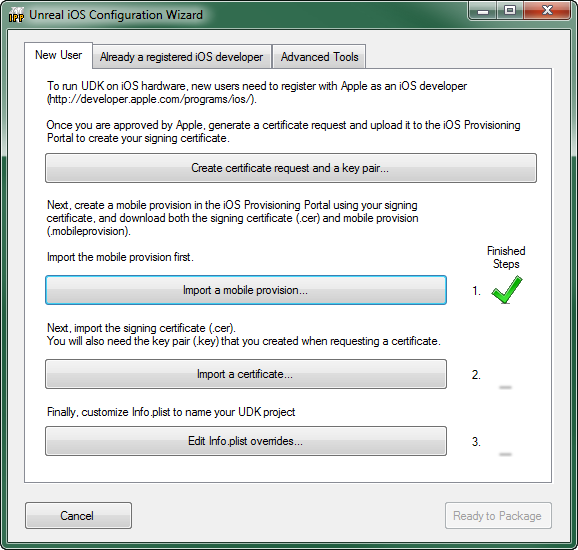
-
次に、
 ボタンをクリックして開発用証明書をインポートします。ファイル ダイアログボックスを使用して、先にダウンロードした開発用証明書を探します。メッセージボックスが表示されて、先に作成した鍵ペアファイルをインポートするように促されます。
ボタンをクリックして開発用証明書をインポートします。ファイル ダイアログボックスを使用して、先にダウンロードした開発用証明書を探します。メッセージボックスが表示されて、先に作成した鍵ペアファイルをインポートするように促されます。
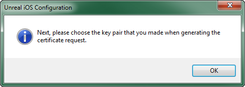
[ OK ] をクリックすると、ファイル ダイアログボックスが開かれるので、これを使用して先にダウンロードした鍵ペアファイルを探します。証明書と鍵ペアのインポートが成功すると、緑のチェックマークが表示されます。
-
ボタンをクリックして、[ Customize Info.plist ] (Info.plist をカスタマイズする) ダイアログボックスを開きます。
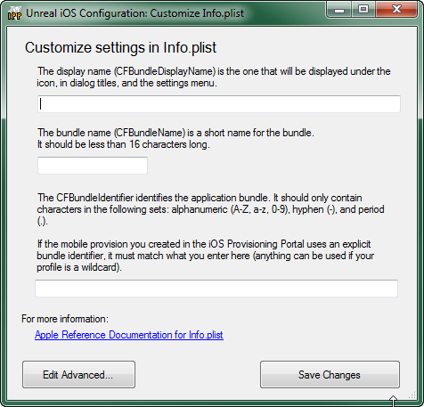
-
以下の項目について入力します。
- Bundle Display Name (バンドル表示名) - iOS デバイスにおいてホームスクリーン上に置かれるアプリケーションのアイコンの真下に表示される名称です。この名称は、コンパクトなものにして、割り当てられたスペース内に収まりカットされないようにしてください。 (例:
UDN iOS Game) - バンドル名 - アプリケーションを識別するために利用される圧縮された名称です。文字数は 16 文字未満でなければなりません。 (例:
UDNiOSGame) - バンドル識別子 - Apple のデベロッパ ウェブサイトで先に作成した App ID のバンドル識別子と一致しなければなりません。アシスタントを使用して自動的に App ID を作成した場合は、App ID のバンドル識別子がワイルドカード (*) になっており、ここに入力するバンドル識別子は自由に設定することができます。手動で作成する方法 (高度なプロビジョニングのセットアップ) によって明示的なバンドル識別子を指定した場合は、ここで入力するバンドル識別子がそのバンドル識別子と正確に一致している必要があります。( 例:
com.EpicGames.UDNiOSGame)
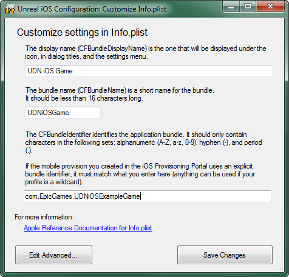
- Bundle Display Name (バンドル表示名) - iOS デバイスにおいてホームスクリーン上に置かれるアプリケーションのアイコンの真下に表示される名称です。この名称は、コンパクトなものにして、割り当てられたスペース内に収まりカットされないようにしてください。 (例:
-
ボタンをクリックして Info.plist の情報を保存します。 Info.plist の保存に成功すると、緑のチェックマークが表示されます。
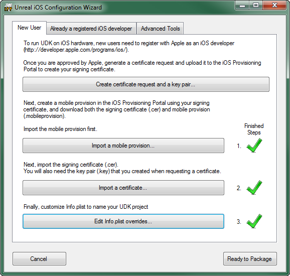
- ボタンをクリックしてコンフィギュレーション ウィザードを終了します。 ツールバーの Start this Level on iPhone (iPhone 上でこのレベルを起動する) からエディタ経由でコンフィギュレーション ウィザードにアクセスしていた場合は、パッキングのプロセスが継続するとともに、接続されている iOS デバイスにゲームがロードされます。接続されているデバイスがない場合は、エラーが発生します。 Windows の スタートメニューからコンフィギュレーション ウィザードにアクセスしていた場合は、この時点でコンフィギュレーション ウィザードが終了します。 TODO - Unreal Frontend から開かれた場合も当てはまるのか? - Jeff Wilson
既存のプロビジョニングを移行する
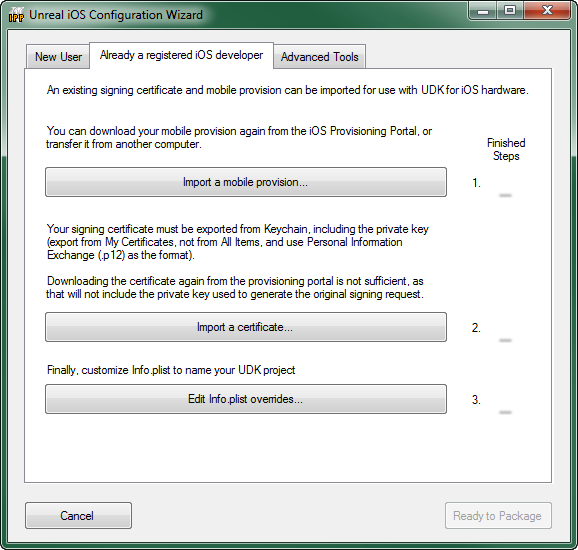
証明書を取り出す
以前から iOS アプリケーションを開発している方で、これから UDK を使用して iOS 用ゲームを開発しようとしている方は、証明書と秘密鍵をキーチェーンアクセス (Keychain Access) からエクスポートして、UDK を稼働させる PC にインポートする必要があります。 _Mac 上では、コード署名依頼を作成した際にログイン中ユーザーの鍵ペアがまだ存在しない場合は、鍵ペアが何も表示されずに密かに作成およびインストールされます。サインイン中のユーザーに鍵ペアがある場合は、常にそれが使用されます。その鍵はコード署名依頼を作成した Mac 上にしか存在しないため、証明書と鍵ペアの両方をエクスポートしない限り、Apple からダウンロードした証明書はそのマシン以外で使用できないことになります。 _ 注意: キーチェーン アクセス アプリケーションは使用に際して何がエクスポートされたかを明示しませんが、最終的に次のような形でエクスポートすることが可能です。- 証明書だけ (鍵ペアはなし)
- 鍵ペアだけ (証明書はなし)
- 公開鍵または秘密鍵を個別に
- 証明書と鍵ペアの両方
-
キーチェーン アクセス アプリケーションを起動します。

-
キーチェーン アクセス アプリケーションの中で、[ Keychains ] ペインから [ login ] (ログイン) を選択し、さらに [ Category ] (カテゴリー) ペインから [ My Certificates ] (自分の証明書) を選択します。
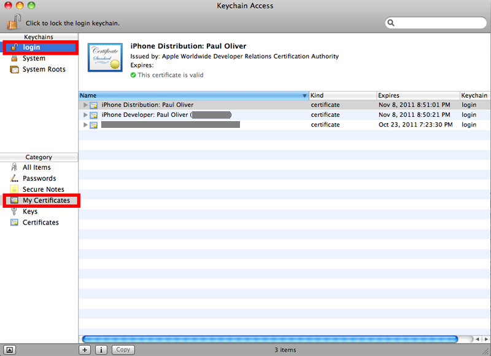
-
Developer (開発者) の certificate (証明書) を選択します。これによって証明書と鍵ペアの両方がエクスポートされます。
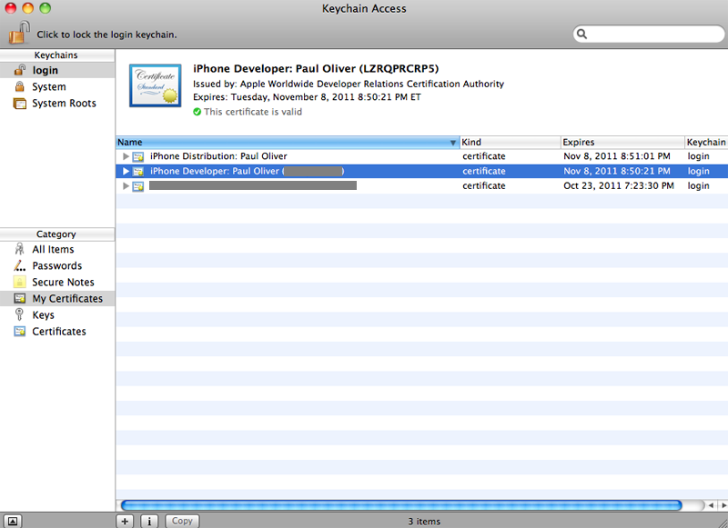
-
ここで、[ File ] (ファイル) メニューから Export items... (アイテムをエクスポートする) を選択します。
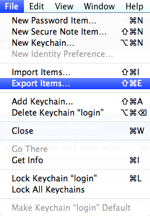
開いたダイアログボックスを使って .p12 ファイルの形式で証明書と鍵ペアを保存します。
-
鍵ペアのエクスポートが可能になる前に、キーチェーンによってパスワードの入力を求められます。
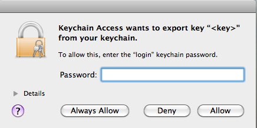
パスワードを入力して、 Allow (許可) をクリックすることによってエクスポートを続けます。 - これで証明書と鍵ペアがエクスポートされました。このファイルを PC に移すことによって、証明書と鍵ペアをコンフィギュレーション ウィザードを使って UDK にインポートできるようにします。
UDK から証明書を取り出す
以前に、証明書依頼と鍵ペアを Unreal iOS コンフィギュレーション ウィザードを使って作成し、さらにAppleのデベロッパ ウェブサイト上で iOS Provisioning Portal (iOS プロビジョニングポータル) から証明書とモバイルプロビジョニングプロファイルをダウンロードして UDK のためのプロビジョニングをセットアップしたことがある場合は、その時のプロビジョニングプロファイルを簡単に他のデベロッパに回したり新たな PC に移したりすることができます。各デベロッパに回すには、Unreal iOS コンフィギュレーション ウィザードの [ Already a registered iOS developer ] (すでに登録 iOS デベロッパである) タブを使って、プロビジョニング プロファイルと鍵ファイル、証明書を新たな PC に移すことができます。既存のプロビジョンと証明書をインポートする
開発用証明書とプロビジョニング プロファイルを生成およびダウンロードしたら、コンフィギュレーション ウィザードの [ Already a registered iOS developer ] (すでに登録 iOS デベロッパである) タブを使って UDK の中にインポートします。-
ボタンをクリックして、プロビジョニング プロファイルをインポートします。ファイル ダイアログボックスを使用して、先にダウンロードしたプロビジョニング プロファイルを見つけます。プロファイルのインポートが成功すると、緑のチェックマークが表示されます。

-
次に、 ボタンをクリックして開発用証明書をインポートします。ファイル ダイアログボックスを使用して、キーチェーン アクセス アプリケーションからエクスポートした鍵ペアと証明書を探します。証明書と鍵ペアのインポートが成功すると、緑のチェックマークが表示されます。

- ボタンをクリックして、[ Customize Info.plist ] (Info.plist をカスタマイズする) ダイアログボックスを開きます。
-
以下の項目について入力します。
- Bundle Display Name (バンドル表示名) - iOS デバイスにおいてホームスクリーン上に置かれるアプリケーションのアイコンの真下に表示される名称です。この名称はコンパクトなものにすることによって、割り当てられたスペース内に収まりカットされないようにするべきです。(例:
UDN iOS Game) - バンドル名 - アプリケーションを識別するために利用される圧縮された名称です。文字数は 16 文字未満でなければなりません。 (例:
UDNiOSGame) - バンドル識別子 - Apple のデベロッパ ウェブサイトで先に作成した App ID のバンドル識別子と一致しなければなりません。アシスタントを使用して自動的に App ID を作成した場合は、App ID のバンドル識別子がワイルドカード (*) になっており、ここに入力するバンドル識別子は自由に設定することができます。手動で作成する方法 (高度なプロビジョニングのセットアップ) によって明示的なバンドル識別子を指定した場合は、ここで入力するバンドル識別子がそのバンドル識別子と正確に一致している必要があります。( 例:
com.EpicGames.UDNiOSGame)
- Bundle Display Name (バンドル表示名) - iOS デバイスにおいてホームスクリーン上に置かれるアプリケーションのアイコンの真下に表示される名称です。この名称はコンパクトなものにすることによって、割り当てられたスペース内に収まりカットされないようにするべきです。(例:
-
ボタンをクリックして Info.plist の情報を保存します。 Info.plist の保存に成功すると、緑のチェックマークが表示されます。

- ボタンをクリックしてコンフィギュレーション ウィザードを終了します。 ツールバーの Start this Level on iPhone (iPhone 上でこのレベルを起動する) からエディタ経由でコンフィギュレーション ウィザードにアクセスしていた場合は、パッキングのプロセスが継続するとともに、接続されている iOS デバイスにゲームがロードされます。接続されているデバイスがない場合は、エラーが発生します。 Windows 内のスタートメニューからコンフィギュレーション ウィザードにアクセスしていた場合は、この時点でコンフィギュレーション ウィザードが終了します。 TODO - Unreal Frontend から開かれた場合も当てはまるのか? - Jeff Wilson